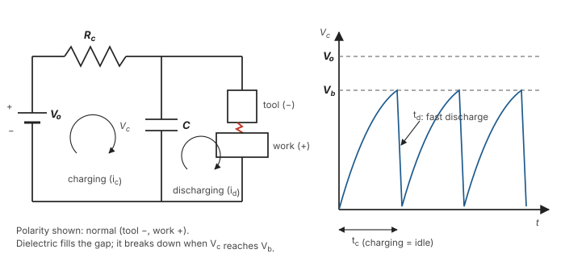

Unit 3 · Lesson 4 of 12 · ~25 min · Derivation
The RC circuit: why sparks fire at 72% of supply voltage
One differential equation, one integral, one maximisation. This is the most-asked EDM derivation.
Derive the charging voltage and current of the relaxation circuit, the energy per spark, and the condition for maximum power delivery, ending at \(V_b \approx 0.72\,V_0\).
Set-up and symbols

A DC source \(V_0\) charges capacitor \(C\) through resistance \(R_c\). The capacitor is connected across the tool–work gap. When its voltage reaches the breakdown voltage \(V_b\) of the dielectric, it discharges as a spark, then recharges. Symbols follow Jain:
- \(V_{ct}\): capacitor voltage at time \(t\); \(i_{ct}\): charging current
- \(\tau = R_c C\): time constant
- \(\tau_c\): charging (idle) time; discharge time is much shorter
Part A · Charging voltage and current
- Current through \(R_c\) (Ohm's law): \[ i_{ct} = \frac{V_0 - V_{ct}}{R_c} \tag{7.1} \]
- Same current charges the capacitor: \[ i_{ct} = C\,\frac{dV_{ct}}{dt} \tag{7.2} \]
- Equate and separate variables: \[ \frac{dV_{ct}}{V_0 - V_{ct}} = \frac{dt}{R_c C} \tag{7.3} \]
- Integrate: \[ -\ln(V_0 - V_{ct}) = \frac{t}{R_c C} - K_1 \] \[ \Rightarrow\; \ln(V_0 - V_{ct}) = -\frac{t}{R_c C} + K_1 \tag{7.4} \]
- Boundary condition \(V_{ct} = 0\) at \(t = 0\) gives \(K_1 = \ln V_0\). Substitute and take exponentials:
\[ V_{ct} = V_0\left(1 - e^{-t/R_c C}\right) \tag{7.6} \]
- Put (7.6) into (7.1):
\[ i_{ct} = \frac{V_0}{R_c}\, e^{-t/R_c C} \tag{7.7} \]
Jain says the time constant is when the capacitor reaches "0.638 V0". Put \(t = R_cC\) in (7.6): \(1 - e^{-1} = 0.632\). Write 0.632 V0 (63.2%).
Part B · Energy and average power
- Energy delivered into the capacitor (later dumped into the gap) in time \(dt\): \[ dE = i_{ct}\,V_{ct}\,dt = \frac{V_0^2}{R_c}\left(e^{-t/\tau} - e^{-2t/\tau}\right)dt \tag{7.8} \]
- Integrate from 0 to \(t\) with \(E = 0\) at \(t = 0\): \[ E = \frac{V_0^2\,\tau}{R_c}\left[\frac{1}{2} + \frac{1}{2}e^{-2t/\tau} - e^{-t/\tau}\right] \tag{7.10} \]
- Average power if charging lasts \(\tau_c\). Put \(x = \tau_c/\tau\):
\[ P_{avg} = \frac{E}{\tau_c} = \frac{V_0^2}{R_c\,x}\left[\frac{1}{2} + \frac{1}{2}e^{-2x} - e^{-x}\right] \tag{7.11} \]
Since \(\tau/R_c = C\), equation (7.10) equals \(\tfrac12 C V_0^2 (1-e^{-x})^2 = \tfrac12 C V_{ct}^2\). It is simply the energy stored in the capacitor. At breakdown, the energy per spark is
\[ W_d = \tfrac{1}{2}\,C\,V_b^2 \tag{7.17} \]Part C · Condition for maximum power
Why not let the capacitor charge fully to \(V_0\)? That takes infinite time, so power (energy per unit time) goes to zero. Very short charging gives tiny energy per spark. The best is in between.
- Write \(g(x) = \tfrac12 - e^{-x} + \tfrac12 e^{-2x}\), so \(P_{avg} \propto g(x)/x\).
- Set the derivative to zero (7.12): \[ \frac{d}{dx}\left(\frac{g}{x}\right) = 0 \;\Rightarrow\; x\,g'(x) = g(x) \] \[ \Rightarrow\; x\left(e^{-x} - e^{-2x}\right) = \tfrac12 - e^{-x} + \tfrac12 e^{-2x} \]
- This is transcendental. Solve by trial:
So \(x = \tau_c / R_cC \approx 1.26\).
x LHS RHS 1.00 0.2325 0.1998 1.20 0.2526 0.2442 1.26 0.2560 0.2566 1.30 0.2577 0.2646 - Substitute in (7.6):
\[ V_b = V_0\left(1 - e^{-1.26}\right) \approx 0.72\,V_0 \tag{7.13} \]
"Maximum power is delivered to the gap when the capacitor discharges at about 72% of the supply voltage, i.e. the breakdown voltage (set by the gap) should be \(V_b \approx 0.72\,V_0\)." Jagadeesha reaches the same result as 0.716 V0.
Discharge (one line)
During discharge through the spark resistance \(R_s\), with \(V_{ct} = V_{co}\) at \(t = 0\):
\[ V_{ct} = V_{co}\,e^{-t/R_s C}, \qquad i_d = \frac{V_{co}}{R_s}\,e^{-t/R_s C} \tag{7.16} \]\(R_s\) is tiny, so discharge is far quicker than charging. That is the sawtooth.
Practise
5 marksClose the notes. Derive the condition for maximum power delivery in the RC relaxation circuit of EDM.
- Sketch circuit and Vc–t sawtooth.
- \(i = (V_0 - V_c)/R_c = C\,dV_c/dt\) ⇒ \(V_c = V_0(1 - e^{-t/R_cC})\), \(i = (V_0/R_c)e^{-t/R_cC}\).
- \(dE = i V_c\,dt\) ⇒ \(E = (V_0^2\tau/R_c)[\tfrac12 + \tfrac12 e^{-2t/\tau} - e^{-t/\tau}]\).
- \(P_{avg} = E/\tau_c = (V_0^2/R_c x)[\tfrac12 + \tfrac12 e^{-2x} - e^{-x}]\), \(x = \tau_c/\tau\).
- \(dP_{avg}/dx = 0\) ⇒ \(x \approx 1.26\).
- \(V_b = V_0(1-e^{-1.26}) \approx 0.72\,V_0\). Energy per spark \(= \tfrac12 C V_b^2\).
Jagadeesha Problem 6.1. In an RC generator the capacitor charges to 80 V before discharge, and C = 100 µF. Find the spark energy.
Jagadeesha Problem 6.2. Open-circuit voltage 100 V, capacitor charges to 70 V in an idle (charging) time of 500 µs, C = 100 µF. Find the charging resistance Rc.
The book prints 6.02 Ω; the algebra gives 4.15 Ω.
Jagadeesha Problem 6.3. The generator is set for maximum power (Vc = 0.716 V0). Rc = 10 Ω, C = 200 µF. Find the idle (charging) time.
t ≈ 2.52 ms. The book prints 1.588 ms, which does not follow from its own numbers. Note that \(t/R_cC = 1.26\) here, exactly the optimum x.
Quick check
1. At t = RcC, the capacitor voltage is…
- 72% of supply
- 63.2% of supply
- 50% of supply
- 100% of supply
\(1 - e^{-1} = 0.632\). The 72% value belongs to the maximum-power condition at \(x = 1.26\).
2. Why not let the capacitor charge all the way to V0?
- The dielectric would quickly boil away
- The spark would become too weak
- The tool would wear far faster
- Charging time becomes infinite, power zero
Full charge needs infinite time. Power is energy per unit time, so it drops to zero. Maximum power lies at an intermediate voltage.
3. Energy released in one RC spark is…
- ½ C Vb²
- ½ C V0²
- ½ Rc Vb²
- Vb² / Rc
The capacitor's stored energy at breakdown, Jain Eq 7.17.
4. For maximum power, the ratio τc/RcC is about…
- 0.72
- 0.63
- 1.26
- 2.00
Solving \(x(e^{-x}-e^{-2x}) = \tfrac12 - e^{-x} + \tfrac12 e^{-2x}\) gives x ≈ 1.26, which produces Vb ≈ 0.72 V0.